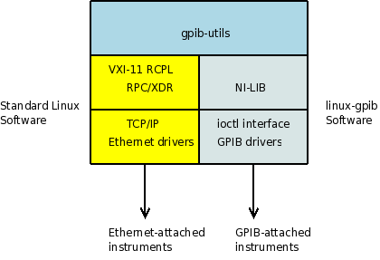

VXI-11 eliminates one step in the process of establishing instrument connectivity to Linux: GPIB board setup. For GPIB boards or USB GPIB adapters, linux-gpib provides kernel drivers and National Instruments library compatibility. Although linux-gpib is a well maintained project, linux-gpib kernel drivers do not seem to be on track for inclusion into the Linux kernel, and linux-gpib is not part of most major Linux distributions (with the exception of Debian). Thus, for many users, linux-gpib must be recompiled and reinstalled every time the kernel is updated. With VXI-11, kernel drivers are not needed and instrument connectivity software like gpib-utils is much easier to get going. Further, it becomes possible to build gpib-utils as a standalone package which could be adopted by a Linux distribution without the kernel baggage. The following figure depicts gpib-utils relationship to the VXI-11 software stack versus GPIB:

Adding VXI-11 support to gpib-utils was a matter of including the vxi11.x ONC RPC definitions from the VXI-11 spec (pulled from the Agilent application note examples referenced below), adding Makefile targets to generate the stubs for the VXI-11 services with rpcgen, and adding VXI-11 function calls to gpib.c, where all gpib-utils's I/O functions are wrapped. Because the gpib.c wrappers were already there, it was possible to add VXI-11 support without modifying the instrument utilities themselves, although in some cases it was necessary to alter error handling code to more gracefully exit, shutting down RPC services to avoid leaving the other end of the connection to time out.
Each utility takes an --address command line argument, used to specify the instrument address which is passed to the gpib.c wrapper initialization function. If the address contains a colon, the initialization function now interprets it to be a VXI-11 hostname:logical_device, otherwise it is assumed to be a numeric GPIB primary address. For example, a native VXI-11 instrument might be called meter:inst0, an instrument at GPIB address 9 behind an Ethernet-to-GPIB controller such as the ICS 8065 might be addressed as gpibgw:gpib0,9, and the same instrument directly attached to a GPIB card would simply be addressed as 9. For convenience, a configuration file /etc/gpib-utils.conf has been added so that default addresses can be entered there for each instrument and the --address argument does not have to be used every time. In earlier releases of gpib-utils, each instrument was expected to be present in /etc/gpib.conf. This is no longer necessary, and indeed RPM packages for gpib-utils 1.3 are available compiled with and without linux-gpib. In the latter case, specifying a GPIB instrument address results in an initialization error.
Since gpib-utils is rather unsophisticated in its use of GPIB facilities, only the core VXI-11 channel was used. The abort and intr (SRQ) channels were not implemented. VXI-11 device locking is not used. VXI-11 device discovery (broadcast to portmapper port 111) was not implemented.